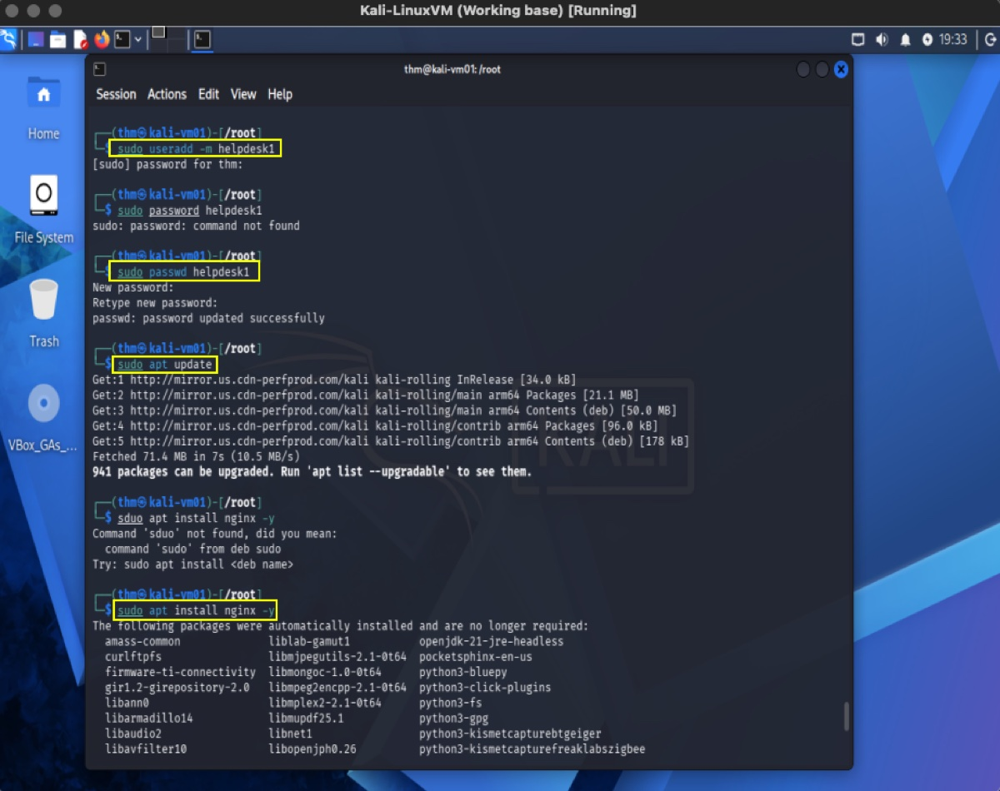
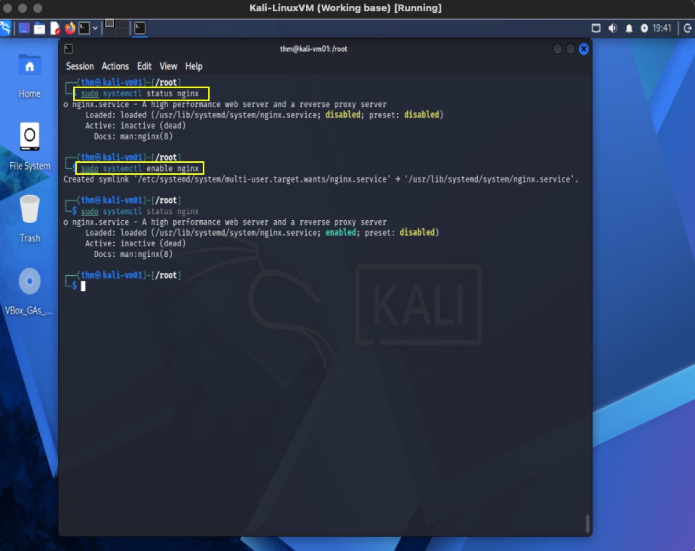
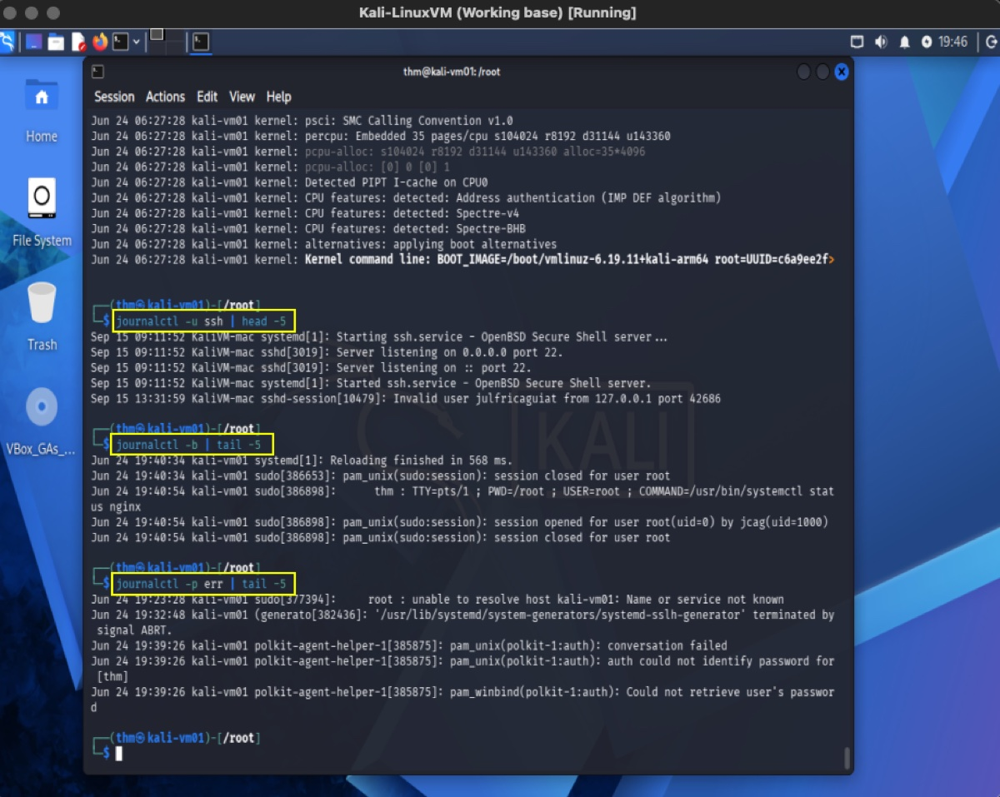
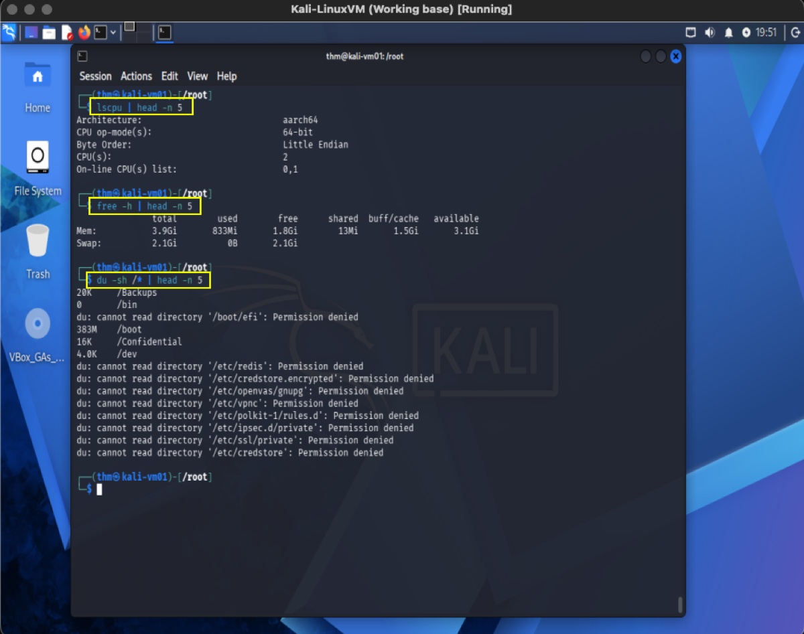

Overview
Linux servers power a significant portion of enterprise infrastructure, cloud platforms, web services, security appliances, virtualization environments, and network management systems.
Effective Linux administration requires understanding user management, software installation, service management, system monitoring, scheduled tasks, and basic security practices.
This module focuses on the core administrative responsibilities of managing Linux servers in production and enterprise environments.
Learning Objectives
- Manage local user and group accounts.
- Configure password policies and account security.
- Install, update, and remove software packages.
- Manage system services and daemons.
- Monitor server performance and resource utilization.
- Schedule administrative tasks.
- Configure hostnames and time settings.
- Understand system startup and boot processes.
- Perform basic server hardening procedures.
- Collect system information for troubleshooting.
Understanding Privileged Access
Root User
The root account possesses unrestricted access to all system resources.
Display current user:
whoamiExample output:
rootUsing sudo
Most administrative tasks should be performed using sudo rather than logging in directly as root.
Execute a command with elevated privileges:
sudo commandExample:
sudo apt updateVerify sudo Access
sudo -lExample output:
User admin may run the following commands:
(ALL : ALL) ALLUser Account Administration
Display User Information
View current identity:
idView logged-in users:
whoDisplay recent logins:
lastCreate a User
sudo useradd analyst1Set password:
sudo passwd analyst1Create User with Home Directory
sudo useradd -m analyst2Verify:
ls /homeModify User Account
Change username:
sudo usermod -l analyst analyst1Lock account:
sudo usermod -L analystUnlock account:
sudo usermod -U analystDelete User
Remove account:
sudo userdel analystRemove account and home directory:
sudo userdel -r analystGroup Administration
View Groups
cat /etc/groupCurrent user groups:
groupsCreate Group
sudo groupadd sysadminsAdd User to Group
sudo usermod -aG sysadmins analyst2Verify:
id analyst2Password Management
Password Aging Information
Display password policy:
sudo chage -l analyst2Set Password Expiration
Force password change every 90 days:
sudo chage -M 90 analyst2Set warning period:
sudo chage -W 7 analyst2Force Password Reset
sudo passwd -e analyst2User will be required to change password at next login.
System Identification
Hostname Configuration
Display hostname:
hostnameDisplay detailed hostname information:
hostnamectlChange Hostname
sudo hostnamectl set-hostname srv-web01Verify:
hostnamectlTime and Date Management
Display Time Information
timedatectlExample output:
Local time: Sun 2026-06-21
Time zone: America/New_York
NTP service: activeConfigure Time Zone
List available zones:
timedatectl list-timezonesSet timezone:
sudo timedatectl set-timezone America/New_YorkVerify NTP Synchronization
timedatectl statusPackage Management
Package managers vary by Linux distribution.
| Distribution | Package Manager |
|---|---|
| Ubuntu | apt |
| Debian | apt |
| Rocky Linux | dnf |
| AlmaLinux | dnf |
| CentOS Stream | dnf |
Package Management (APT)
Update Repository Information:
sudo apt updateUpgrade Installed Packages:
sudo apt upgradeInstall Software:
sudo apt install nginxRemove Software:
sudo apt remove nginxSearch Packages:
apt search apacheDisplay Package Information:
apt show nginxPackage Management (DNF)
Update Repositories:
sudo dnf check-updateInstall Software:
sudo dnf install httpdRemove Software:
sudo dnf remove httpdSearch Packages:
dnf search apacheService Management
Linux services are managed through systemd.
View Service Status
systemctl status sshExample output:
Active: active (running)Start Service
sudo systemctl start nginxStop Service
sudo systemctl stop nginxRestart Service
sudo systemctl restart nginxReload Configuration
sudo systemctl reload nginxEnable Service at Boot
sudo systemctl enable nginxDisable Service
sudo systemctl disable nginxList Running Services
systemctl list-units --type=serviceSystem Logs
systemd uses journald for centralized logging.
View Recent Logs
journalctlFollow Logs in Real Time
journalctl -fView Service Logs
journalctl -u nginxProcess Monitoring
Display Running Processes
ps auxInteractive Process Viewer
topAlternative:
htopInstall:
sudo apt install htopFind Specific Process
ps aux | grep nginxKill Process
Terminate by PID:
kill PIDExample:
kill 2245Force termination:
kill -9 2245Resource Monitoring
Memory Usage
free -hExample Output:
Mem: 8Gi 3Gi 4GiCPU Information
lscpuDisk Usage
df -hExample:
Filesystem Size Used Avail Use%
/dev/sda2 100G 40G 55G 43%Directory Usage
du -sh /var/logScheduled Tasks
Linux uses cron for recurring jobs.
View Current Cron Jobs
crontab -lEdit Cron Jobs
crontab -eCron Schedule Format
* * * * * command
│ │ │ │ │
│ │ │ │ └─ Day of Week
│ │ │ └── Month
│ │ └──── Day of Month
│ └────── Hour
└──────── MinuteExample Cron Jobs
Run every day at 2:00 AM:
0 2 * * * /usr/local/bin/backup.shRun every hour:
0 * * * * /usr/local/bin/check_disk.shSystem Startup and Boot
View Boot Time
uptimeView Boot Performance
systemd-analyzeDisplay Startup Services
systemctl list-unit-files --type=serviceBasic Security Hardening
Verify Listening Ports
ss -tulpnAlternative:
netstat -tulpnReview User Accounts
cat /etc/passwdReview Privileged Accounts
sudo grep sudo /etc/groupVerify Failed Login Attempts
sudo lastbUpdate System
sudo apt update && sudo apt upgrade -ySystem Information Collection
Operating System Information
cat /etc/os-releaseKernel Version
uname -rHardware Information
hostnamectlNetwork Information
ip addrRouting Table:
ip routePractical Exercises
Exercise 1 — User Administration
Create a user:
sudo useradd -m helpdesk1
sudo passwd helpdesk1Verify:
id helpdesk1
Exercise 2 — Service Administration
Install NGINX:
sudo apt update
sudo apt install nginx -yCheck service:
sudo systemctl status nginxEnable at boot:
sudo systemctl enable nginx
Exercise 3 — Log Investigation
View SSH logs:
journalctl -u sshView last boot:
journalctl -bSearch for errors:
journalctl -p err
Exercise 4 — Resource Monitoring
Check CPU:
lscpuCheck memory:
free -hCheck largest directories:
du -sh /*
Administrative Troubleshooting Checklist
| Issue | Command |
|---|---|
| User cannot login | id username |
| Password expired | chage -l username |
| Service failed | systemctl status service |
| Check service logs | journalctl -u service |
| High CPU usage | top |
| High memory usage | free -h |
| Disk full | df -h |
| Startup issues | systemd-analyze |
| Network issue | ip addr |
| Package issue | apt update |
Key Takeaways
- Linux administration revolves around users, groups, packages, services, logs, and system resources.
- sudo provides controlled administrative access.
- User and group management is performed through useradd, usermod, and groupadd.
- Software installation and updates are managed through package managers such as apt and dnf.
- Services are managed using systemctl.
- System logs are centralized through journalctl.
- Resource monitoring tools such as top, free, df, and ps are critical for troubleshooting.
- Scheduled tasks are automated through cron.
- Basic hardening includes regular patching, service auditing, account review, and port monitoring.
- These administrative skills form the operational foundation for Linux server support, infrastructure administration, SOC operations, and enterprise systems management.
Module Completion Outcome
At the completion of Module 2, you should be capable of administering a Linux server, managing users and services, monitoring system health, maintaining software packages, reviewing logs, scheduling tasks, and performing common operational and troubleshooting activities encountered in enterprise environments.